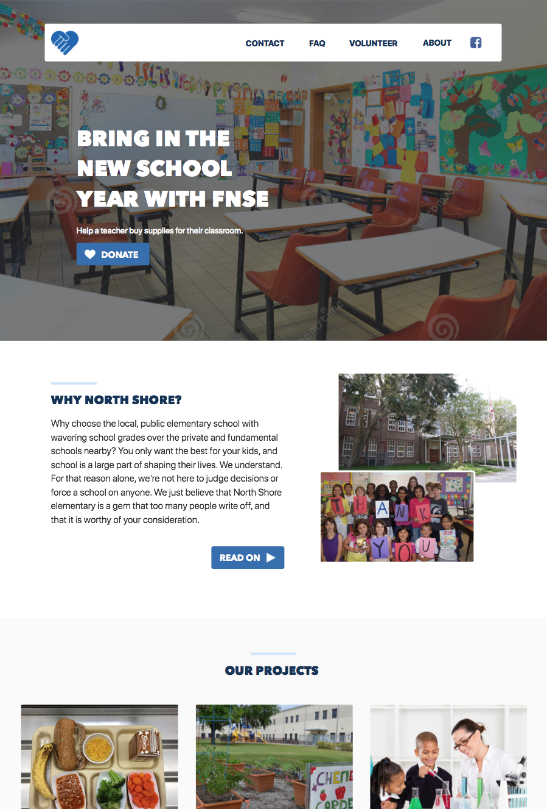
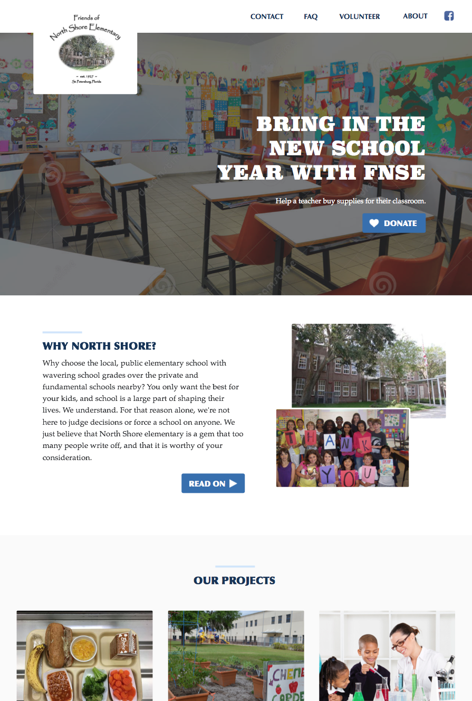

A Second Design Proposal
Mon, May 28, 2018A few days ago I submitted a first stab at a redesign for a local charity. As expected, this was way too much of a change. I learned quickly that a basic round of discussion is needed before jumping into a project. I’m still happy I practiced on the last design, but it turns out they’re looking for more of a clean, expected look. So, I ran with a look you might find in most charity templates.
One additional thought to note – this time, I did a super quick iteration. Less than 3 hours total. I want to do a bunch of small iterations with them now until I know I’m on the right track. Then, the details can follow.
Actually, there is a second note too – they want me to try to keep their existing logo, which isn’t too design friendly. I gave them two versions of the design. One with a stolen modern logo as an example, and one with their current logo. We’ll see how the feedback goes this time around.

